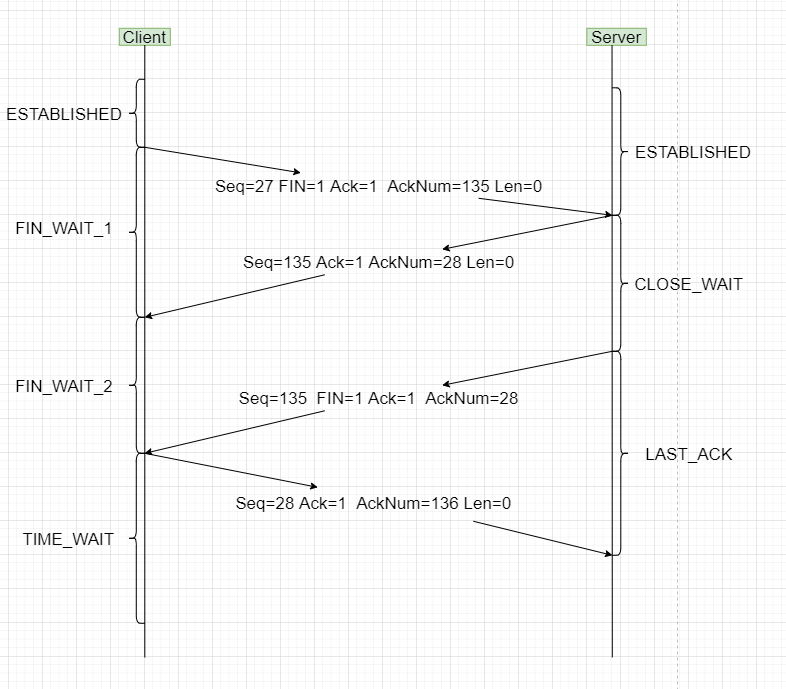

tcp基础(重点)
| 标志位 | 含义 |
| ACK确认比特 | 为1时表示确认 |
| RST复位比特 | 为1时,表示要求对方重新建立连接 |
| SYN同步比特 | 为1时,表示请求建立连接 |
| FIN终止比特 | 为1时,表示发送方没有更多数据了,是断开tcp连接的重要标志 |
| 窗口 | 是TCP流量控制的一个手段。它告诉对方本端的TCP接收缓冲区还剩余多少,控制对方的发送的速度。 |
tcp协议对上面的应用层是以字节流的形式传输,但是对下面的网络层则是以报文段的形式传输。发送数据时tcp协议在将数据流分割成报文段再向下发送,而在接收数据时将下面的报文段再拼接成数据流再向上发送。
tcp-序列号的计算
需要说明的是,发送端和接收端的seq是各自管理互不影响。
数据流中的字节,每一个字节都有自己的序号,而报文段的序号seq是该报文段纯数据(不含头部数据)中第一个字节对应的序号。每个报文段的seq的计算方式如下:
seq = 本端上次报文段seq + 本端上次报文段纯数据字节数 + 本端上次SYN或FIN标志(标志为1则加1)
然后接着说ack的计算,计算时需要用到对端的seq和纯数据字节数,ack的计算方式如下:
ack = 对端的seq + 对端的纯数据字节数 + 对端SYN或FIN标志(标志为1则加1)
tcp-三次握手过程
报文1 整个tcp请求连接开始的地方,发送的seq(这是客户端的序列号开始)为0, acknum = 0, 使用SYN置1表示请求连接,因为是开始所以不需要回复ACK置0。
报文2 服务端接收报文1,发送的seq(这是服务端的序列号开始)为0,使用SYN置1表示接收连接请求, acknum = [对端seq]0 + [对端数据量]0 + [对端SYN位] 1 = 1。
报文3 客户端接收报文2,发送的seq = [本端上次seq]0 + [本端上次数据量]0 + [本端上次SYN位]1 = 1,acknum = [对端seq]0 + [对端数据量]0 + [对端SYN位] 1 = 1。
下面是三次握手之后的数据传输,下面分析一下。
报文4 客户端 -> 服务端 : Seq = 1; Ack = 1; AckNum = 1; Len = 80
报文5 服务端 -> 客户端 : Seq = 1; Ack = 1; AckNum = 81; Len = 0
报文6 客户端 -> 服务端 : Seq = 81; Ack = 1; AckNum = 1; Len = 54
报文7 服务端 -> 客户端 : Seq = 1; Ack = 1; AckNum = 135; Len = 0
报文4 客户端继续发送数据,此次发送纯数据80字节,发送的seq = [本端上次seq]0 + [本端上次数据量]0 +[本端上次SYN位]1 = 1, acknum = [对端seq]0 + [对端数据量]0 + [对端SYN位] 1 = 1
报文5 服务端接收报文4,发送的seq = [本端上次seq]0 + [本端上次数据量]0 +[本端上次SYN位]1 = 1, acknum = [对端seq]1 + [对端数据量]80 + [对端SYN位]0 = 81
报文6 客户端继续发送数据,此次发送纯数据54字节,发送的seq = [本端上次seq]1 + [本端上次数据量]81 +[本端上次SYN位]0 = 81, acknum = [对端seq]1 + [对端数据量]0 + [对端SYN位]0 = 1
报文7 服务端收报文5,发送的seq = [本端上次seq]1 + [本端上次数据量]0 +[本端上次SYN位]0 = 1, acknum = [对端seq]81 + [对端数据量]54 + [对端SYN位]0 = 135
tcp-四次挥手过程
下面来分析一下,注意FIN置1也会使seq增加1,也相当于发送了一个字节的数据,和上面SYN一样

报文1 客户端 FIN置1,请求结束连接,此时客户端发送的seq是27,acknum是135,因为是请求断开连接,所以就不发送数据了。
报文2 服务端接收报文1,此时服务端发送的seq是135,acknum = [对端上次seq]27 + [对端上次数据量]0 + [对端FIN位]1 = 28
报文3 服务端 FIN置1,发送的seq = [本端上次seq]135+[本端上次数据量]0 = 135,acknum = [对端上次seq]27 + [对端上次数据量]0 + [对端FIN位]1 = 28
报文4 客户端接收报文3,发送的seq = [本端上次seq]27+[本端上次数据量]0+[本端上次FIN位]1 = 28,acknum = [对端上次seq]135 + [对端上次数据量]0 + [对端FIN位]1 = 136
这里说一下,上面的客户端和服务端,可以理解为主动关闭端和被动关闭端。客户端和服务端任何一方都可以先断开连接,所以实际上的客户端也会走上面"服务端"的流程,服务端也会走上面"客户端"的流程。
三次握手与四次挥手的状态说明
| 状态 | 解析 |
| LISTEN | 服务端监听状态 |
| SYN_SENT | 客户端请求连接状态 |
| SYN_RCVD | 服务端接收连接请求状态 |
| ESTABLISHED | 客户端、服务端建立连接状态 |
| FIN_WAIT_1 | 客户端等待接收服务端的ACK |
| CLOSE_WAIT | 服务端正处于关闭状态,需要等待服务端应用程序关闭,可能发生半关闭状态 |
| FIN_WAIT_2 | 客户端等待接收服务端的FIN状态,可能发生半关闭状态 |
| LAST_ACK | 服务端等待客户端最后一个ACK状态 |
| TIME_WAIT | 客户端等待两个最长分节生命周期(MSL) |
| CLOSING | 两端恰好同时断开连接,那么两端都进入此状态 |
| CLOSED | 客户端、服务端关闭状态 |
粗实线是主动连接端(客户端),虚线是被动连接端(服务端),细实线是其他特殊情况。
| 问题 | 解答 |
| 为什么连接的时候是三次握手,关闭的时候却是四次握手? | 因为在客户端关闭的时候,会向服务器发送FIN,但是服务器有时不能立刻关闭,还需要传输数据,如上图的四次挥手的第二步。(相当于我知道你要关闭了,我这需要时间处理手头数据,我这边关闭的时候再告诉你) |
| 为什么TIME_WAIT状态需要经过2MSL(2 * 报文段最大生存时间)才能返回到CLOSE状态? | (1) 优雅的关闭TCP连接,也就是尽量保证被动关闭的一端收到它自己发出去的FIN报文的ACK确认报文 (2) 处理延迟的重复报文,这主要是为了避免前后两个使用相同四元组的连接中的前一个连接的报文干扰后一个连接 第一个MSL是为了等自己发出去的最后一个ACK从网络中消失,而第二MSL是为了等在对端收到ACK之前的一刹那可能重传的FIN报文从网络中消失 |
| 为什么不能用两次握手进行连接? | 这主要是为了防止两次握手情况下已失效的连接请求报文段突然又传送到服务端,而产生了错误。考虑下面这种情况:客户端向服务端发出TCP连接请求,第一个连接请求报文在网络的某个结点长时间滞留,超时后客户端认为报文丢失,于是再重传一次连接请求,服务端首先收到第二次请求后建立连接,数据传输完毕后双方断开连接。而此时,前一个滞留在网络中的连接请求到达了服务端,而服务端认为客户端又发来连接请求,此时若是使用"三次握手",则服务端向客户端返回确认报文段,由于是一个失效的请求,因此客户端不予理睬,建立连接失败。若采用的是"两次握手",则这种情况下服务端认为传输连接已经建立,并一直等待客户端传输数据,而客户端此时并无连接请求,因此不予理睬,这样就造成了服务端的资源白白浪费了 |
| 如果已经建立了连接,但是客户端突然出现故障了怎么办? | 服务器在长时间没有接收到客户端数据时,会发送一个探测报文段,如果发送多个探测报文还是没有响应,则会断开与客户端连接 |
| 什么是半关闭状态? | socket的半关闭状态是指在一个TCP连接中,连接的一端(主动方)通过调用shutdown函数关闭了其发送或接收数据的能力,但连接本身并未完全断开,另一端(被动方)仍然可以继续发送或接收数据(取决于主动方关闭了哪个方向)。这种状态允许数据在连接的一个方向上继续流动,而在另一个方向上则被阻塞。 具体来说,当主动方调用shutdown(sockfd, SHUT_WR);时,它关闭了自身的发送方向,但仍能接收来自被动方的数据。此时,主动方进入了半关闭状态,而被动方则可以继续发送数据直到它决定也关闭连接。如果主动方调用shutdown(sockfd, SHUT_RD);,则它将关闭自身的接收方向,但仍然可以向被动方发送数据。 |
tcp是流协议与tcp粘包问题
由于TCP是基于字节流传输数据,所以不能判断出明确一包数据的边界,会导致读取会发生错误,所以基于字节流的传输协议会出现粘包问题。比如一包数据100字节,发送端一次发送了两包,但是接收端一次读取了120个字节,这其中包括了两包数据的头部信息以及第一包数据的内容,导致错误发生。
粘包问题解决方案,tcp传输协议没有处理粘包问题,需要我们在应用层维护消息之间的边界
(1) 接收端和发送端定好发送数据的固定长度,比如1024字节,缺点很明显,长度固定会不灵活,而且长度太大会造成网络负担。
(2) 在一条消息后面加\r\n,例如ftp,缺点是发送的消息中不能包括\r\n,这样还需要特殊处理\r\n。
(3) 在方法1的基础上,自定义信息包结构体,在内部加入信息数据长度变量以及信息数据本身,使得每次发送数据大小可变。